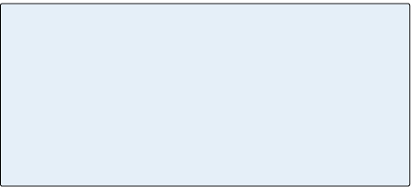

-
Chapter 12
Elements of Form
So far we’ve looked at the type of movement usually found in a good melody, the way its ideas are expressed in phrases, its implied harmony, and various ways that a single
small idea can be extended and developed. This first part of the task might be compared
to the design of parts for a sculpture or a building. Next comes the task of building
these parts into a larger structure.Pammelia, a collection of rounds and canons by Thomas Ravenscroft, London (1609)
-
171
Section 1
Binary and Ternary Forms
The form of a short composition is shaped by repeating and contrasting melodic material. Many traditional short works can be described as following binary Binary A short musical form consisting of two complimentary parts. Both sections, referred to as A and B, are often repeated.
Binary form can be either simple, in which case the
A section does not return, or rounded, in which case
the A section returns either in part or in its entirety.
Rounded binary form, also called minuet form, can be represented as A|BA’ or A|BA. Though the A section returns, the piece retains its binary division. A ternary form (3 part) composition will have a more pronounced contrast, thematically or harmonically, between its A and B sections. Continuous rounded binary form is a distant relative of the sonata form.
Both simple and rounded binary forms can be either sectional or continuous. If the A section ends with a
closed cadence, the form is sectional. If the A section
ends with an open cadence, it’s continuous. or ternary Ternary A compositional form that divides
into three large sections: ABA or ABA′. As with binary form, ternary form can be either sectional or continuous. If the A section is closed, it’s sectional; otherwise it’s continuous. The more common of the two is sectional ternary.
The B section of a ternary form composition is a contrasting section – either harmonically, melodically or both. forms, both of which, despite the names, are made from two elements. We could call
those elements A and B as in Movie 12.1. Within the categories of binary and ternary there are further distinctions based on the composition’s harmonic structure.Simple Binary Forms
“Greensleeves” is a simple binary song that consists of two parallel periods, labeled A and B below. (We use capital letters to refer
to formal elements and small letters to refer to phrases.) Both periods consist of a pair of phrases, the first with an open ending and the second one closed, but the B period’s melody contrasts that of A: while A began low and moved upward, B begins high and moves downward. The term simple means that the A material does not return following the B section.
Movie 12.1 Simple binary: “Greensleeves”
-
172
Depending on its harmonic structure, a simple binary composition can be either sectional or continuous. If the A section ends on the tonic, as “Greensleeves” does, it’s called sectional binary. If the
A section ends on something other than the tonic, usually the dominant, it is called continuous binary, which is the most
common type.The Bach Gavotte in Movie 12.2 is an example of continuous binary form. Here the A section ends inconclusively on a half cadence.
It wouldn’t feel right to end there as one might have done after the first part of "Greensleeves." In a continuous binary form the second part is necessary to form a conclusion.Rounded Binary
So far we’ve seen two examples of simple binary form: sectional
and continuous. Another type of binary form is rounded binary, which can also be either sectional or continuous. Rounded binary form looks like this: A|BA or A|BA’. You might be tempted to see it as a kind of ternary form because the A returns, but it’s considered
to be binary because there are still basically just two sections;
the B section concludes with material from A. Rounded binary (sometimes known as minuet form) is often found in minuets such
as the Haydn example in Movie 12.3. You can see that the material
of the B section resembles that of A, but emphasizes the dominant key. The first time we hear the A material it ends with a half
cadence, making this a continuous rounded binary, just as the
Bach Gavotte was continuous binary. Notice also that when the
A returns, its ending is altered so that it has a cadence to the tonic. This idea has great significance: it’s the seed of sonata form.Movie 12.2 Continuous binary form: Gavotte from Bach’s French Suite No.5 (Click to view full size)
Movie 12.3 Continuous rounded binary form: Menuet from Haydn’s Piano Sonata No. 5 (Click to view full size)
-
173
Ternary Form
A composition in ternary form divides into three large sections: ABA. As with binary form, if the A section is closed, it’s sectional; otherwise it’s continuous. The more common of the two is sectional ternary, shown in the Schumann example below.
Movie 12.4 Sectional Ternary Form: “The Wild Horseman” from Schumann’s Scenes from Childhood
-
174
Review 12.1
1. Most musical compositions divide into two (binary) or three (ternary) parts. Binary forms are built from complimentary phrase groups, which in diagrams are represented as A and B. Simple binary form can be represented as AB, (the A section does not return) and the ternary form as ABA or ABA′.
2. Binary and ternary forms can be sectional or continuous. If the A section ends with a closed cadence, the form is sectional. If the A section
ends with an open cadence, it’s continuous.3. Rounded binary form, sometimes called minuet form, can be represented as A| BA’ or A |BA.
The A material returns after the B section either in part or in its entirety. Continuous rounded binary form is a distant relative of the sonata form.4. The distinction between rounded binary and ternary is not always obvious. Most often a ternary form composition will have a more pronounced contrast, thematically or harmonically, between its A and B sections.
You might ask: why is this “ternary”? It appears to be very much like rounded binary form. And in fact sometimes the difference is academic, but the essential thing is that a ternary form composition will be perceived as having three large sections rather than two. In the case of a rounded binary form, we hear the B and its following
A as one section, forming A│BA or A│BA′. In the case of ternary form, the B section usually contrasts the A section harmonically or thematically. In our Schumann example, the middle section would make sense played all by itself and it’s in a contrasting key, major instead of minor. The melody is still there, moved to the bass, but the switch to major imparts a different feeling. And just as the sonata form to be studied later can be seen as a sort of expanded version of rounded binary, this form can also be expanded: the concept of a contrasting middle section is essential to the Minuet and Trio, a compound ternary form.Remember that composers do not necessarily set out to create
a work according to a preconceived mold. We study these forms
to aid in understanding and appreciating the great works, but the great works may not always fall precisely into one of these shapes.Suggested Practica Musica Activities 12.1
• Analyzing Form: Choose the form that best
represents each music example.
-
175
Section 2
Other Forms of Organization
Binary and ternary forms share one characteristic: they are built from two elements: A and B. Sometimes A and B are repeated, sometimes not; sometimes B contrasts A, sometimes A returns again after B and sometimes it does not. There are other types of musical organization based on completely different principles and we will look at several of those next.
Chaconne
The chaconne Chaconne A variation form built on a repeating chord progression which accompanies a continuous flow of melodic variation. In the time of Bach, a chaconne was characterized by a repeating chord progression in a slow triple meter. , in the time of Bach, was characterized by continuous melodic variation
in a slow triple meter, built on a repeated chord progression. The chaconne technique survives today in much popular instrumental and vocal music in which a simple progression is repeated while the melody changes and develops. Though it’s not in triple meter, “Heart and Soul,” which we saw in Chapter 9, might be considered a sort
of modern chaconne.The Pachelbel chaconne is built on a 4-bar repeated chord progression. Each 4-bar segment introduces a new variation of the opening theme. As the piece develops, we see how the bass line
of a chaconne may vary while preserving the repeated chord progression.Movie 12.5 Johann Pachelbel, Chaconne in F minor
-
176
Ostinato And The Passacaglia
A true chaconne repeats only the chord progression itself, while the bass melody may vary. Other pieces may repeat the bass melody exactly, forming a basso ostinato Basso Ostinato A repeating bass line, also know as a ground bass, that serves as the foundation of a passacaglia or other continuous variation composition. Pachelbel’s “Canon in D,” for example, is built on an ostinato. or ground bass (the term “ostinato” means “stubborn” in Italian). The word passacaglia, though sometimes used interchangeably with “chaconne,” can specifically apply to works built on an ostinato. The famous ground bass from “Dido’s Lament” consists of a descending chromatic line which is repeated eleven times during the aria.

Movie 12.6 A passacaglia: “Dido’s Lament” from Purcell’s Dido and Aeneas
-
177
Canon and Round
One of the most enjoyable group activities for students of music is the singing of canons Canons A single melody composed so that it harmonizes with itself when sung or played in strict imitation by one or more voices beginning at different times. The lead voice begins alone followed by each voice entering in succession, a set number of beats apart.
A special type of canon known as a round, or circular canon, is one whose ending harmonizes with its beginning and which therefore can repeat without stopping.
“Row, Row, Row Your Boat,” for example, can be repeated indefinitely. and rounds. A canon is a composition
in which a single melody is repeated in several voices that begin at different times, sometimes according to a rule set out by the composer. Probably the best-known canon is “Row, Row, Row Your Boat,” which is a special type of canon known as a round or circular canon – a canon whose ending harmonizes with its beginning and which therefore can repeat without stopping. Here’s another round that works very well and which you may not know:Figure 12.1 An old English round
Movie 12.7 “Hey, Ho, Nobody Home” written in score (Click to view full size)
This round can be sung in three parts. The second singer begins when the first one reaches the ❋, and the third singer begins when the second singer reaches the ❋. Each singer on reaching the end goes immediately to the beginning again without missing a beat. You can see the effect of this more clearly if we write out the first bars as they would be heard. This would be called writing the music in score, so that all the sounding parts can be seen together. The repeat signs show that the round can be continued indefinitely (Movie 12.7).
-
178
In Pachelbel’s well-known Canon in D, which could be described as a combination canon and passacaglia, the bass player is given the task of repeating this ostinato bass twenty-seven times, while the other players perform a canon above it: The other voices of the Pachelbel Canon are complicated; this simple repeating pattern in the bass helps to make the composition easier to understand.

Figure 12.2 The ostinato bass of Pachelbel’s Canon in D
Movie 12.8 Pachelbel’s Canon in D written in score (Click to view full size)
-
179
Review 12.2
1. Variation forms, such as the chaconne or
passacaglia, are based on continuous melodic variation accompanied by a repeating harmonic
or melodic idea. A piece built on a repeating chord progression can be called a chaconne. A passacaglia
is based on a repeated melody that is usually in the bass but can appear in other voices. Such a repeated accompaniment melody is itself called an ostinato or ground bass.2. The word canon (“rule”) generally refers to a
tune that is written so that it can provide its own accompaniment at an interval of one or two measures. One player begins the tune and after the first player has reached a certain point another one joins in, playing from the start. A round or circular canon is
a special kind of canon whose ending harmonizes
its beginning, so that it can be repeated endlessly. More esoteric canons may involve one singer performing the tune backwards, etc.Suggested Practica Musica Activities 12.2
• Rounds: Several traditional rounds are presented, and you can try tapping your part or singing along with the computer.

-
180
Section 3
Large Scale Works
The Sonata
Large instrumental works are often divided into movements – independent and contrasting sections, usually separated by a moment of silence. A sonata Sonata An instrumental work in three or four movements, usually for keyboard alone or keyboard plus a solo instrument. The movements of a sonata are contrasting in mood, sometimes key, tempo and form. The first movement of a classical sonata is always written in sonata form. There is no prescribed form for the other movements.
Though the title “sonata” is normally used for works involving only one or two players, large scale works for other ensembles follow the same formal principles as the sonata: symphonies are essentially sonatas for orchestra; string quartets are sonatas for quartet; concertos are sonatas for a solo instrument and orchestra. is an instrumental work with three or four contrasting movements. The title “sonata” is normally used for works involving only one or two players, such as a piano sonata, or piano with an added solo instrument, but large scale works for other ensembles follow the same formal principles as the sonata: symphonies are essentially sonatas for orchestra; string quartets are sonatas for quartet; concertos are sonatas for a solo instrument and orchestra.During the Classical era, the first movement of the sonata, and hence the first movement of the Classical symphony, developed a characteristic form which we call sonata form Sonata Form The first movement of a classical sonata, symphony, or string quartet
(to name just a few). The sonata form is characterized by contrasting keys, contrasting themes and thematic development. The movement begins with
a statement (exposition) followed by a departure (development) and then
a return (recapitulation).
The sonata form structure (A B A′) is essentially a rounded binary form.
The exposition presents (usually) two contrasting themes in the tonic key
and then modulates, usually to the dominant. The development section develops the thematic material presented in the exposition, and it may also modulate to a number of other keys. The recapitulation will be marked by a return to the original key and a reiteration of the themes heard in the exposition. The recapitulation, of course, finishes in the tonic key. . The other movements of the sonata will vary in form from one sonata to another, but the opening movement is always in sonata form.Sonata Form
The rounded binary structure of the Haydn Menuet that we
saw earlier in this chapter is a distant relative of the plan for the first movement of a sonata. The sonata form is much larger and more complicated, but it’s still basically a rounded binaryform in which the beginning material returns at the end. Understanding sonata form will greatly aid your appreciation
of classical music.Sonata form has three sections: exposition (A), development (B) and recapitulation (A’). The exposition presents one, or more often, two contrasting themes in the tonic key and then modulates (changes key), usually to the dominant. For example, if the movement is in C major, it would be in G major at the end of the exposition. The development section will often use some of the techniques described in Chapter 11 to modify and vary the thematic material presented in the exposition, and it may also modulate to a number of other keys. The recapitulation will be marked by a return of the themes heard at the beginning, in their original key – but this time material from the exposition will be rewritten so that the movement ends in
Figure 12.3 Sonata Form
-
181
the tonic key. The return of the original material in the recapitulation is often a dramatic and emotionally satisfying moment. In one of his letters, Mozart describes a Paris audience that actually cheered when the theme returned.
Theme And Variations
The second movement of a sonata is usually slow and cast in
an expanded binary or ternary form. Sometimes, however, a composer may choose to write a theme and variations Theme and Variations A common variation form in which a simple theme is used as the basis of a set of contrasting variations. The theme, usually a short well-known tune complete with repeated sections, is stated at the beginning followed by a set of variations, each the same length as the theme, that vary in tempo, mood and key. A switch from major to minor or vice versa, is fairly standard.
Variation sets, in which the theme has its own formal structure, are usually sectional; each variation is separated by a closure from the next variation. This contrasts with the continuous variation form exemplified by the chaconne and passacaglia.
A set of variations can be the basis of an entire composition, or a movement or section of a larger work. The second movement of a classical symphony is often in the form of a theme and variations. . The theme, often a folk song or other well-known melody, is stated at the beginning and then played a number of additional times with various alterations. The goal of the composer is to change the music in interesting ways while still allowing the listener to recognize the theme. The following, while not taken from a sonata, is a particularly clear example of variation. The theme Mozart chose for this set of twelve variations is a short binary song known to English-speaking audiences as “Twinkle, Twinkle, Little Star.”Each variation is the same length and has the same phrase structure as the theme. The variations are sectional, meaning each variation is separated from the next by a harmonic close.
Here are the A sections of the first two variations. Variation I features an elaboration of the melody in running sixteenth notes with a little added rhythmic interest in the bass. Variation II introduces some added dissonances with syncopation over a quick bass figure.
Movie 12.9 Theme from Mozart’s Twelve Variations on “Ah, vous dirai-je, Maman” (Click to view full size)
Movie 12.10 Variations I and II from Mozart’s
Twelve Variations on “Ah, vous dirai-je, Maman”
(Click to view full size) -
182
A set of variations almost always includes a variation in a contrasting key. In this case, the switch is from major to minor. You can hear Variation 8, in c minor, in Chapter 13 (Movie 13.16).
The tempo is marked Adagio (slow) for Variation 11 where Mozart uses a technique called imitation Imitation A compositional device common
in many types of polyphonic compositions. Imitation refers to
the repetition of melodic material between voices in a canonic manner. Unlike a canon, the repeated material is a melodic fragment or motive which may be transposed. in the opening bars. Notice how the lower voice repeats the melodic figure of the upper voice in measure 2. As is often the case, the tempo of the final variation is brisk, and in this case the meter changes to triple from duple.Minuet And Trio
The third movement of a sonata is often a pair of dances in triple meter, called a minuet and trio Minuet and Trio A compound form often found as
the third movement of a sonata, symphony or string quartet. The individual dances are based on rounded binary form but the movement as a whole has a ternary form (three sections with a contrasting middle). The trio corresponds to the
B part of a ternary composition.
It contrasts with the minuet in both mood and key. The minuet is usually the most vigorous and dance-like, while the trio has a more lyrical character. . The Haydn minuet we saw earlier is part of a minuet and trio movement taken from one of his early piano sonatas. The minuet and trio displays both binary and ternary form, since each dance is
in rounded binary and the movement as a whole is ternary – the trio serves as the contrasting middle section and the minuet is repeated afterward.Movie 12.11 Variations XI and XII from Mozart’s Twelve Variations on “Ah, vous dirai-je, Maman”
(Click to view full size)Figure 12.4 Minuet and Trio Form
-
183
Typically, the minuet has more vigorous dance-like rhythms, while the trio, often in a different key, has a lyrical (song-like) character.
A classical symphony in four movements, very often includes a minuet and trio as its third movement. You can hear the contrasting nature of the trio in these excerpts from Schubert’s Symphony No. 3:

Movie 12.12 Menuetto, Schubert, Symphony No. 3
-
184
Rondo
Finally, the last movement of the sonata is in a fast tempo and may appear in sonata form like the first movement. Another popular choice for the final movement is the rondo Rondo A compositional form following
the pattern ABACAD...A. A lively rondo is a popular choice for the final movement of a sonata (symphony, string quartet, concerto). The characteristic feature of a rondo is
the repeated return of the A material which is called the rondo theme.
The melodic episodes between the repeated A sections travel to other keys and provide thematic contrast. which resembles this: ABACAD...A. That pattern can be compared to a repeated ternary form, except that the B is constantly being replaced by new material: C, D, etc. The distinguishing feature of the rondo is the repeated returns of the A material, which is usually an easily recognizable passage referred to as the rondo theme.Typically the rondo will have at least one melodic episode in a minor key (if the theme is major), and others that modulate to the dominant or other keys. In the Mozart excerpt at right (Movie 12.13), the B section modulates to the dominant, and the C section is in the relative minor.
These are just the barest outlines of the individual movements one often finds in a sonata. Remember, that these designs are only the most typical patterns; there’s a lot of variation in these forms and there are other patterns that have grown out of them. The ingenuity employed by composers in shaping large works is a subject that can be studied in greater depth than our space permits.
Movie 12.13 Rondo from Mozart’s String Quartet K. 159 (Click to view full size)
-
185
Review 12.3
1. The classical sonata is an instrumental work, in
three or four movements, usually for keyboard alone or keyboard plus a solo instrument. The movements of a sonata are contrasting in mood, sometimes in key, tempo and form. Large scale works for other ensembles follow the same formal principles as
the sonata: symphonies are essentially sonatas for orchestra; string quartets are sonatas for quartet; concertos are sonatas for a solo instrument and orchestra.2. The first movement of a sonata is almost always
in sonata form, which resembles a greatly
expanded rounded binary form. The sonata form
is characterized by contrasting keys, contrasting themes and thematic development. The exposition modulates to the dominant; the development section starts in the dominant and may pass through other keys. The recapitulation is again in the tonic key
and features material from the first section.
The recapitulation corresponds to the return
of A in rounded binary form.3. The second movement of a sonata is usually a slow movement. It may be a theme and variations, in which you hear first a simple, usually well-known, melody followed by a set of variations. The goal in such a movement is to vary the tune in interesting ways while still allowing it to be recognized.
4. Symphonies often use the minuet and trio as a
third movement. These are dances in rounded
binary form. The minuet is usually the most
vigorous, with the trio having a contrasting lyrical character and a different key. After the trio the minuet is played again without repeats, so that
the movement as a whole has a ternary form
(three sections with a contrasting middle).5. The final movement of a sonata is fast in tempo
and may return to sonata form. Rondo form, which follows the pattern ABACAD...A, is also a popular choice. A rondo is distinguished by the repeated returns of the A material, called the rondo theme. The melodic episodes between the repeated A
sections travel to other keys and provide contrast.